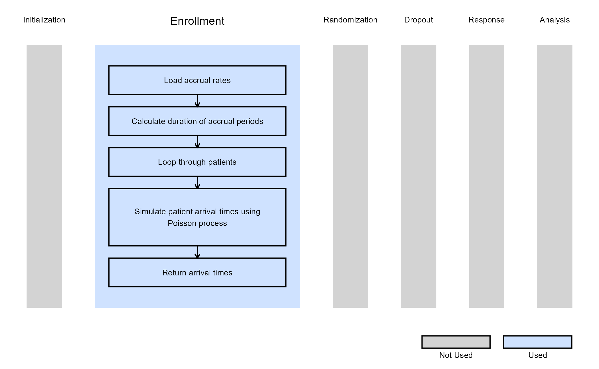

Generate Patient Arrival Times with Poisson Process
J. Kyle Wathen
April 17, 2025
GeneratePoissonArrival.RmdIntroduction
This example demonstrates how to add the ability to generate patient arrival time according to a Poisson process with a ramp-up.
The examples included here are to provide different approaches for simulating arrival time according to a Poisson process.
Once CyneRgy is installed, you can load this example in RStudio with the following commands:
CyneRgy::RunExample( "GeneratePoissonArrival" )Running the command above will load the RStudio project in RStudio.
East Workbook: GeneratePoissonArrival.cywx
RStudio Project File: GeneratePoissonArrival.Rproj
In the R directory of this example you will find the following R file:
- GeneratePoissonArrival.R - This file provides the code used for the two examples below.
Example 1 - Ramp-Up In Accrual
In this example we make use of the UserParam and provide 7 rates, dRate1, dRate2, …, dRate7. Starting at time 0, the assume accrual rate is dRate1 per unit time, at time 1, the rate changes to dRate2, at time 3, the rate changes to dRate3, etc. For example, if the time unit is months, then this example illustrates how to ramp up over a 6 month period, where at month 6 and beyond the accrual rate is assumed to be dRate7.
Suppose that the expected accrual rates were 3, 6, 10, 15, 18, 25, 35 starting at time unit 0, 1, 2, 3, 4, 5, 6. One example trial could have accrual that looks like the following:

Example 2 - Ramp-Up In Accrual Using Built In Input
In this example we make use of the built-in inputs for East and East Horizon to provide a ramp-up in accrual that the user can specify.
Suppose that the user specified the start periods as 0, 6, 12, 18, 24, 48 and the expected accrual rates of 1, 4, 12, 24, 48. Then, from time 0 to time 6, the expected rate is 1 patient per time unit, from time 6 to 12, the rate is 4 patients per time unit, time 12 to 18, expected accrual is 12, time 18 to 24, the rate is 24, and after time unit 24, it is assumed to be 48. One example trial could have accrual that looks like the following, with dashed lines at the time points where accrual rates change:
